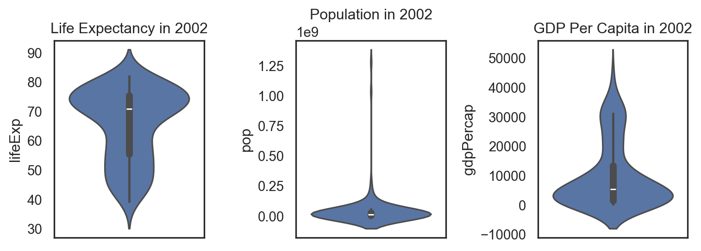
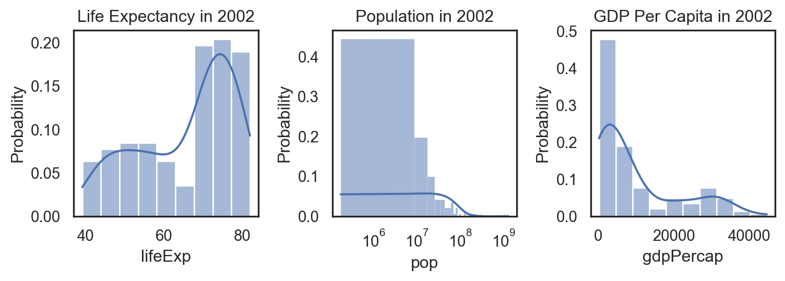
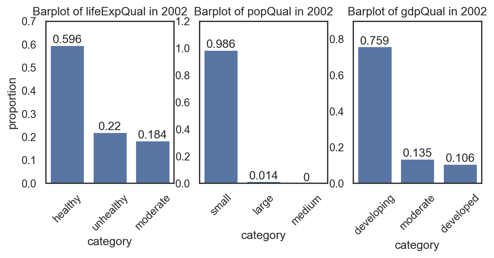
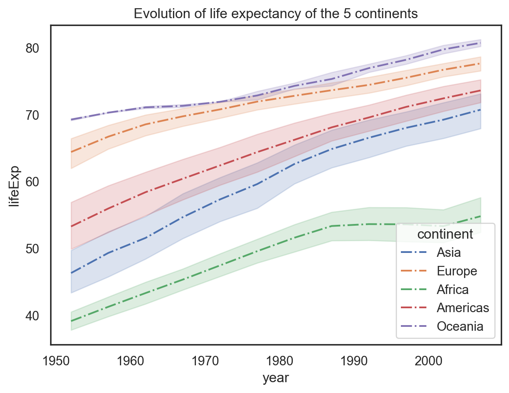
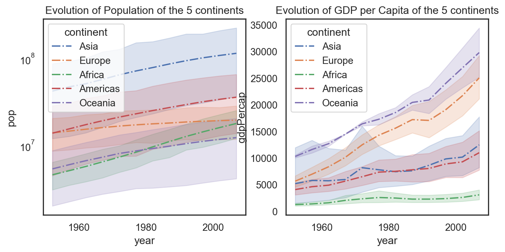

Exploratory Data Analysis & Unsuperivsed Learning Course: PHAUK Sokkey, PhD TP: HAS Sothea, PhD
Objective: This initial practical session is designed to enhance your understanding of various data variable types and the corresponding statistical and graphical tools suitable for each type.
The Jupyter Notebook for this TP can be downloaded here: TP1-Gapminder.
1. Gapminder dataset
Gapminder is an excerpt of data available at https://gapminder.org. For each of \(142\) countries (country), the package provides values for life expectancy (lifeExp), GDP per capita (gdpPercap), and population (pop), every five years, from \(1952\) to \(2007\) (year). It is initially used in Jennifer Bryan’s excellent gapminder teaching package for R (ggplot, tidyverse, and more). For more information about gapminder:
#%pip install gapminder # This is for installing the packagefrom gapminder import gapminderprint(f"* Number of observations: {gapminder.shape[0]}")gapminder.sample(3)
* Number of observations: 1704
country
continent
year
lifeExp
pop
gdpPercap
276
Chile
Americas
1952
54.745
6377619
3939.978789
0
Afghanistan
Asia
1952
28.801
8425333
779.445314
827
Kenya
Africa
2007
54.110
35610177
1463.249282
2. Variable types
EDA involves summarizing and visualizing data to uncover patterns, detect anomalies, and understand relationships between variables. Statistical summaries, such as mean, median, and standard deviation, are essential tools in this process.
Which variables are considered quantitative and which are qualitative? Hint: You can check the default column types by using gapminder.dtypes.
Response:
Quantitative: year, lifeExp, pop and gdpPercap.
Qualitative: continent and country.
2.1 Quantitative variables
In year 2002,
Compute suitable statistics for each quantitative variable (excluding year) to obtain an overall summary.
Recall the definitions of Pearson’s second coefficient of skewness and kurtosis introduced in the course. Compute these metrics for each quantitative variable and explain the distribution of each variable based on these values.
Code
import numpy as np# Define data for 2002year =2002df2002 = gapminder[gapminder.year == year]df2002.describe().drop(columns='year').transpose().drop(columns=['count', '25%', '75%'])
mean
std
min
50%
max
lifeExp
6.569492e+01
1.227982e+01
39.193000
7.082550e+01
8.200000e+01
pop
4.145759e+07
1.408483e+08
170372.000000
1.037292e+07
1.280400e+09
gdpPercap
9.917848e+03
1.115411e+04
241.165876
5.319805e+03
4.468398e+04
Note: At this step, you can have overall view of how different in scale all variables may be. Notice where is the mean and what is the range of each variable. For example: In 2002, among 142 countries, a newborn in the healthiest nation could expect to live beyond 80 years, while in the unhealthiest, a newborn’s life expectancy was no more than 40 years. The average life expectancy across these countries was nearly 66 years. Notably, the median life expectancy was higher than the average, indicating that the majority of these countries had life expectancies well above the average.
Pearson’s second coefficient of skewness is defined by: \[\text{Skewness}=\frac{3(\text{mean}-\text{median})}{\sigma},\] and it measures the symmetry of the distribution of the data.
Kurtosis is defined by: \[\text{Kurt}=n\left(\frac{\sum_{i=1}^n(x_i-\bar{x}_n)^4}{(\sum_{i=1}^n(x_i-\bar{x}_n)^2)^2}\right),\] and it measures how heavy the tails of the data distribution are compared to a normal distribution. Note that for all normal distributions, the kurtosis is 3.
Scipy.stats compute skewness using Fisher-Pearson’s definition \(\mathbb{E}[((X-\mu)/\sigma)^3]\). This is significantly different from Pearson’s definition (for more, see https://www.itl.nist.gov).
Fisher-Pearson Skewness: This measure (around \(7.4\)) indicates a significant skewness in your data. A value this high suggests a heavily skewed distribution, likely with a long tail on one side.
Pearson’s Second Skewness: This value (\(0.7\)) is much smaller and suggests a moderate skewness. Pearson’s second skewness is essentially a normalized version and might not capture the extremity as prominently as the Fisher-Pearson measure.
Kurtosis values suggests strong heavy and long right tail for pop and moderate lighter tails for lifeExp compared to normal distribution.
Graphically represent the distribution of each variable in year \(2002\). Briefly explain each variable after plotting its distribution.
Hint: For describing the distribution of a quantitative variable, suitable graphs are boxplot, violinplot, density or histogram.
Code
import matplotlib.pyplot as pltimport seaborn as snssns.set(style="white")_, ax = plt.subplots(1, 3, figsize = (8, 3))sns.violinplot(data=df2002, y ="lifeExp", ax=ax[0])ax[0].set_title("Life Expectancy in 2002")sns.violinplot(data=df2002, y ="pop", ax=ax[1])ax[1].set_title("Population in 2002")sns.violinplot(data=df2002, y ="gdpPercap", ax=ax[2])ax[2].set_title("GDP Per Capita in 2002")plt.tight_layout()plt.show()

One can also look at density and histogram, which convey the same information.
Code
_, ax = plt.subplots(1, 3, figsize = (8, 3))sns.histplot(data=df2002, x ="lifeExp", ax=ax[0], kde=True, stat="probability")ax[0].set_title("Life Expectancy in 2002")sns.histplot(data=df2002, x ="pop", ax=ax[1], kde=True, stat="probability")ax[1].set_title("Population in 2002")ax[1].set_xscale("log")sns.histplot(data=df2002, x ="gdpPercap", ax=ax[2], kde=True, stat="probability")ax[2].set_title("GDP Per Capita in 2002")plt.tight_layout()plt.show()

According to the data, in 2002:
Which country is the richest?
Which country is the poorest?
Which country is the healthiest?
Which country is the unhealthiest?
Code
print(f"The richest country is {df2002.country[df2002.gdpPercap == np.max(df2002.gdpPercap)].values[0]}")print(f"The poorest country is {df2002.country[df2002.gdpPercap == np.min(df2002.gdpPercap)].values[0]}")print(f"The healthiest country is {df2002.country[df2002.lifeExp == np.max(df2002.lifeExp)].values[0]}")print(f"The unhealthiest country is {df2002.country[df2002.lifeExp == np.min(df2002.lifeExp)].values[0]}")
The richest country is Norway
The poorest country is Congo, Dem. Rep.
The healthiest country is Japan
The unhealthiest country is Zambia
Repeat the previous question for the year 1977. Before computing, can you guess which country had the lowest life expectancy around that year?
Code
df2007 = gapminder[gapminder.year ==1977]print(f"The richest country is {df2007.country[df2007.gdpPercap == np.max(df2007.gdpPercap)].values[0]}")print(f"The poorest country is {df2007.country[df2007.gdpPercap == np.min(df2007.gdpPercap)].values[0]}")print(f"The healthiest country is {df2007.country[df2007.lifeExp == np.max(df2007.lifeExp)].values[0]}")print(f"The unhealthiest country is {df2007.country[df2007.lifeExp == np.min(df2007.lifeExp)].values[0]}")
The richest country is Kuwait
The poorest country is Myanmar
The healthiest country is Iceland
The unhealthiest country is Cambodia
2.2. Qualitative variables
Qualitative variables are simpler than quantitative ones, as we primarily focus on the proportion or frequency of each category. In our dataset, the existing qualitative variables are not suitable for analysis because they are repeated each year. Therefore, we will create three new qualitative variables associated with the three quantitative ones by dividing them into three categories each.
In year 2002,
Add the following three variables to the gapminder dataset by grouping each quantitative variable into \(3\) groups.
Create variable gdpQual with three categories: [“developing”, “moderate”, “developed”] using variable gdpPercap.
Create variable popQual with three categories: [“small”, “medium”, “large”] using variable pop.
Create variable lifeExpQual with three categories: [“unhealthy”, “moderate”, “healthy”] using variable lifeExp.
Hint: you may find np.histogram and pd.cut function helpful.
Compute the appropriate statistical values and graphically represent the distribution of each newly created qualitative variable.
Code
print("* Distribution of gdpQual:")df2002[["gdpQual"]].value_counts(normalize=True).to_frame().transpose()
* Distribution of gdpQual:
gdpQual
developing
moderate
developed
proportion
0.758865
0.134752
0.106383
Code
print("* Distribution of popQual:")df2002[["popQual"]].value_counts(normalize=True).to_frame().transpose()
* Distribution of popQual:
popQual
small
large
medium
proportion
0.985816
0.014184
0.0
Code
print("* Distribution of lifeExpQual:")df2002[["lifeExpQual"]].value_counts(normalize=True).to_frame().transpose()
* Distribution of lifeExpQual:
lifeExpQual
healthy
unhealthy
moderate
proportion
0.595745
0.219858
0.184397
Graphical representation
Code
_, ax = plt.subplots(1,3, figsize = (8, 3))df0 = df2002[["lifeExpQual"]].value_counts(normalize=True).to_frame().round(3)df0['category'] = [df0.index[i][0] for i inrange(3)]sns.barplot(df0, x ="category", y="proportion", ax=ax[0])ax[0].bar_label(ax[0].containers[0])ax[0].set_title("Barplot of lifeExpQual in 2002")ax[0].set_ylim((0.0, 0.7))ax[0].set_xticklabels(ax[0].get_xticklabels(), rotation=45)df0 = df2002[["popQual"]].value_counts(normalize=True).to_frame().round(3)df0['category'] = [df0.index[i][0] for i inrange(3)]sns.barplot(df0, x ="category", y="proportion", ax=ax[1])ax[1].bar_label(ax[1].containers[0])ax[1].set_title("Barplot of popQual in 2002")ax[1].set_ylim((0.0, 1.2))ax[1].set_xticklabels(ax[1].get_xticklabels(), rotation=45)ax[1].set_ylabel("")df0 = df2002[["gdpQual"]].value_counts(normalize=True).to_frame().round(3)df0['category'] = [df0.index[i][0] for i inrange(3)]sns.barplot(df0, x ="category", y="proportion", ax=ax[2])ax[2].bar_label(ax[2].containers[0])ax[2].set_title("Barplot of gdpQual in 2002")ax[2].set_ylim((0.0, 0.9))ax[2].set_xticklabels(ax[2].get_xticklabels(), rotation=45)ax[2].set_ylabel("")plt.show()

As highlighted in the previous step, pop and gdpPercap are skewed to the right side of the distribution. Therefore, when grouping into classes, only a few countries fall into the above-moderate class. On the other hand, lifeExp is less skewed and we obtain less imbalanced classes when grouping into categories.
3. Time evolution
Gapminder captures global changes from \(1952\) to \(2007\). It is more insightful to examine how these variables evolve over time.
3.1. Evolution of average lifeExp of the \(5\) continents
Create a line plot of lifeExp for the five continents from \(1952\) to \(2007\) using sns.lineplot. What observations can you make from the plot?
Code
sns.lineplot(data=gapminder, x="year", y="lifeExp", hue="continent", linestyle="-.")plt.title("Evolution of life expectancy of the 5 continents")plt.show()

People across all continents have been getting healthier over the years. Oceania stands out as the healthiest continent, while Africa remains the unhealthiest, with life expectancy growth nearly stable over the past two decades. The graph highlights a positive global trend toward better health, likely driven by advancements in technology and healthcare systems.
Repeat the same process with pop, and then with gdpPercap. Provide your comments for each case.
Code
_, ax = plt.subplots(1,2,figsize=(9,4))sns.lineplot(data=gapminder, x="year", y="pop", hue="continent", linestyle="-.", ax=ax[0])ax[0].set_title("Evolution of Population of the 5 continents")ax[0].set_yscale("log")sns.lineplot(data=gapminder, x="year", y="gdpPercap", hue="continent", linestyle="-.", ax=ax[1])ax[1].set_title("Evolution of GDP per Capita of the 5 continents")plt.show()

Plot the evolution of the three quantitative variables for Cambodia. What do you observe?
Code
_, ax = plt.subplots(1,3,figsize=(9,3))sns.lineplot(data=gapminder[gapminder.country =="Cambodia"], x="year", y="pop", linestyle="-.", ax=ax[0])ax[0].set_title("Population of Cambodia")ax[0].set_yscale("log")sns.lineplot(data=gapminder[gapminder.country =="Cambodia"], x="year", y="gdpPercap", linestyle="-.", ax=ax[1])ax[1].set_title("GDP per Capita of Cambodia")sns.lineplot(data=gapminder[gapminder.country =="Cambodia"], x="year", y="lifeExp", linestyle="-.", ax=ax[2])ax[2].set_title("Life Expectancy of Cambodia")ax[2].set_yscale("log")